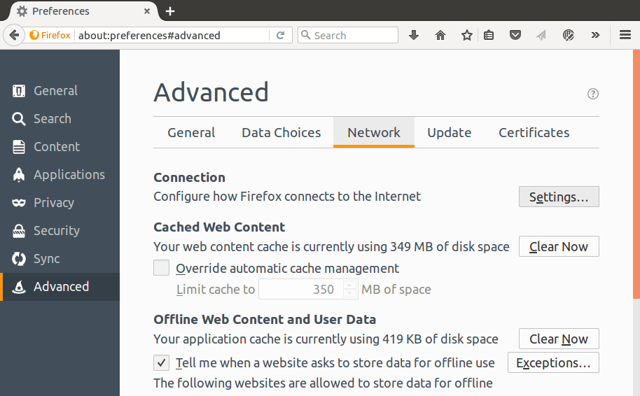
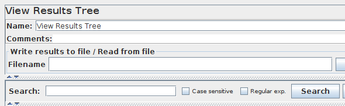

This tutorial attempts to explain the exact steps for recording HTTP/HTTPS. For those new to JMeter, one easy way to create a test plan is to use the Recorder.
Since JMeter 2.10, recording has been improved to better handle embedded resources and creation of certificates on the fly.
To enable these features, JMeter uses keytool utility (available in JRE/JDK) so you need to ensure your
configuration is correct, read this wiki page before starting.
This will start the JMeter proxy server which is used to intercept the browser requests.
A file called ApacheJMeterTemporaryRootCA.crt will be generated in JMETER_HOME/bin
folder. Install this certificate in your browser, if you don't know how to do it,
read Installing the JMeter CA certificate for HTTPS recording
26.3 Configure your browser to use the JMeter Proxy¶
At this point, JMeter's proxy is running. For this exercise, we will use Iceweasel/Firefox
to view some pages on the JMeter website.
Start Iceweasel/Firefox, but do not close JMeter.
From the tool bar, click
Edit → Preferences (or
Tools → Preferences or type about:preferences#advanced
as URL). This should bring up the options.

Select the Advanced tab, and Network tab
Click Settings button near the top.
On the new pop-up, check Manual proxy configuration. The address and
port fields should be enabled now.
Address
enter localhost or the IP address of your system
Port
enter 8888.
Check Use this proxy server for all protocols
Click OK button. This should return you to the browser
With your browser, in the Address bar at the top, enter http://example.com/index.html (replace example.com with your websites address).
and hit the enter key.
Click on a few links on your sites pages.
Close your browser and bring up the JMeter window.
Expand the Thread Group and there should be several samplers. At this point, the test plan can
be saved as is.
If you forget to add default HTTP Request settings, you will have to manually
delete the server name, and port.
In this sample, there aren't any default request parameters. If a particular request parameter
is required by all pages, the request defaults is where one would add the entries.
Variabilize some input (login, password, search words, …)
Correlate some data (session variable, …) between two requests
To variabilize, we can use:
CSV Data Set Config to get input data from csv file
JMeter functions like __counter, __time, …
etc.
To correlate, we can get data from a request with Post Processors like JSON Extractor, Regular Expression Extractor, … and inject it in another request.
To find data to correlate, the easiest way to do it is to use the Search function in View Results Tree.

At this point, we are ready to run our test plan and see what happens. When you're
ready to run the test, there are two ways:
With the gui, but it's not recommended to big load test.
With the command line.
Solution 1, with the gui, but just during debug phase, use CLI mode (Non GUI) for your load test.
Run → Start
or use the keyboard and press Ctrl + R
Before you start the test, add a Summary Report element and select it. As the test runs, the statistics will change
until the test is done. At the end of the test, the summary report should look like this.
While the test is running, in the upper right-hand corner, there should be a green circle. When the test is done, the circle should be grey.
Solution 2, in command line, use jmeter -n -t [jmx file] -l [results file] -e -o [Path to output folder]
At the end of the test, an HTML report will be generated and available in [Path to output folder] used in command line.


{kind=link}

{kind=link}


{kind=link}
{kind=link}